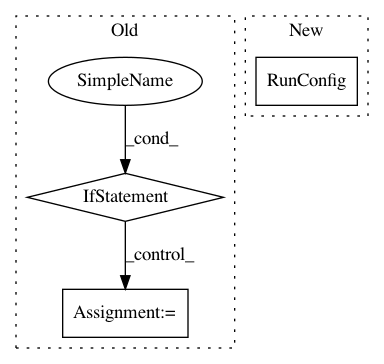

5698b1cb39cd840fb6ec58ab98ad8ab099f6e1ea,qiskit/aqua/utils/circuit_cache.py,CircuitCache,load_qobj_from_cache,#CircuitCache#Any#Any#Any#,148
Before Change
if self.skip_qobj_deepcopy: exec_qobj.experiments = self.qobjs[chunk].experiments[0:len(circuits)]
else: exec_qobj.experiments = copy.deepcopy(self.qobjs[chunk].experiments[0:len(circuits)])
if not run_config: run_config = {}
exec_qobj.config.shots = run_config.get("shots", 1024)
exec_qobj.config.max_credits = run_config.get("max_credits", 10)
exec_qobj.config.memory = run_config.get("memory", False)
exec_qobj.config.memory_slots = max(experiment.config.memory_slots for
After Change
else: exec_qobj.experiments = copy.deepcopy(self.qobjs[chunk].experiments[0:len(circuits)])
if run_config is None:
run_config = RunConfig(shots=1024, max_credits=10, memory=False)
exec_qobj.config = run_config
exec_qobj.config.memory_slots = max(experiment.config.memory_slots for experiment in exec_qobj.experiments)
exec_qobj.config.n_qubits = max(experiment.config.n_qubits for experiment in exec_qobj.experiments)
return exec_qobj
In pattern: SUPERPATTERN
Frequency: 3
Non-data size: 3
Instances
Project Name: Qiskit/qiskit-aqua
Commit Name: 5698b1cb39cd840fb6ec58ab98ad8ab099f6e1ea
Time: 2019-01-29
Author: dongreenberg2@gmail.com
File Name: qiskit/aqua/utils/circuit_cache.py
Class Name: CircuitCache
Method Name: load_qobj_from_cache
Project Name: tensorflow/models
Commit Name: 823da3187f25593275f437ec86624b42c8395fbc
Time: 2018-04-19
Author: taylorrobie@google.com
File Name: official/resnet/resnet_run_loop.py
Class Name:
Method Name: resnet_main
Project Name: tensorflow/models
Commit Name: 6a0dda1ff86915d15cba0c9c12a9fc8a5e71a1a7
Time: 2018-08-28
Author: jaeman1.park@gmail.com
File Name: official/mnist/mnist.py
Class Name:
Method Name: run_mnist